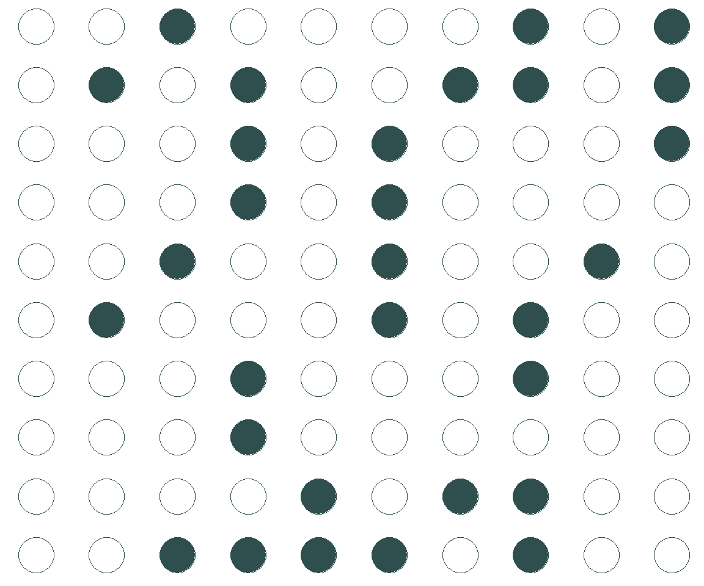
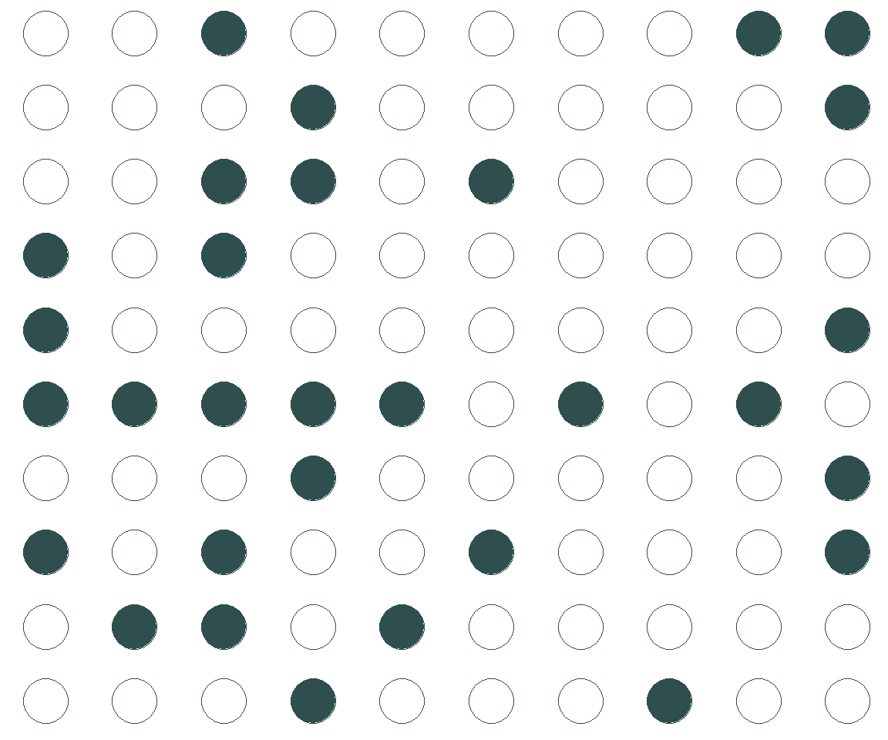
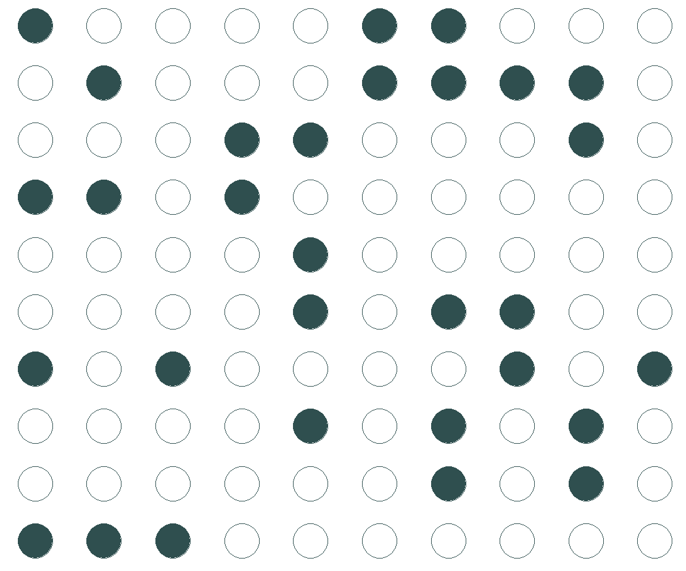
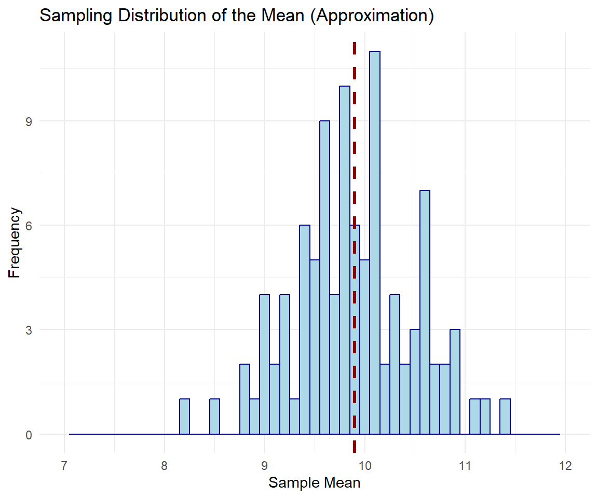
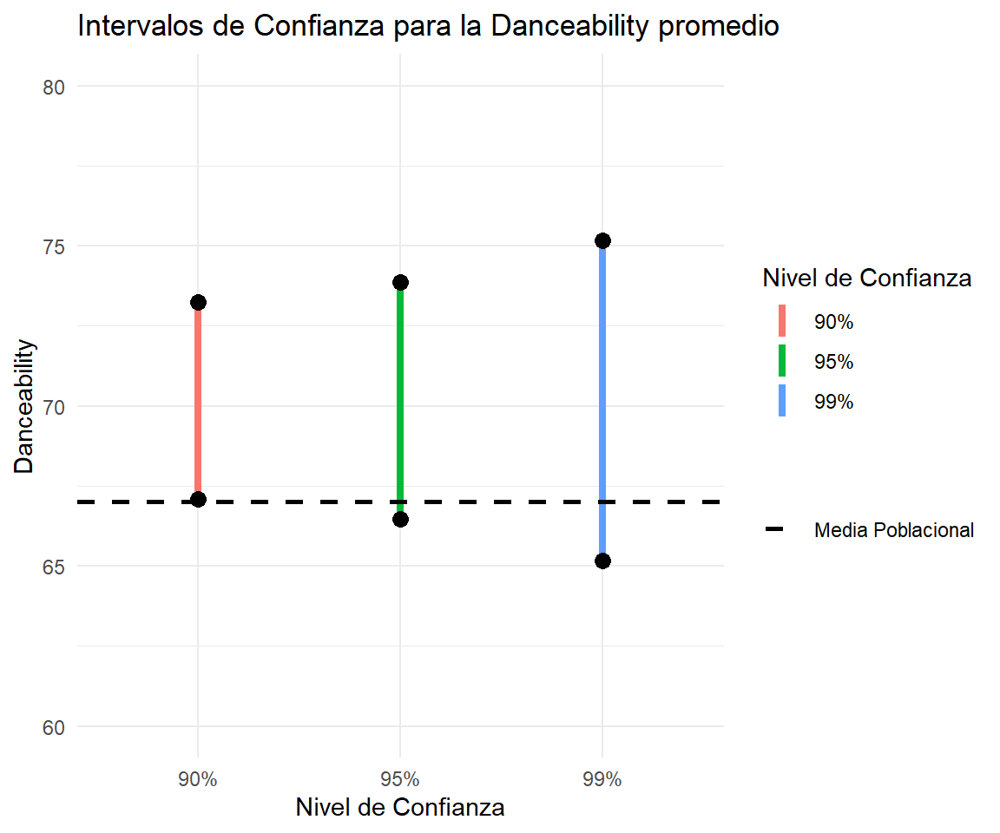

Analítica de los Negocios
Distribución muestral e Intervalos de Confianza
Carlos Cardona Andrade
Plan para hoy
Datos categóricos
Población y Muestra
Los estadísticos descriptivos discutidos anteriormente describen una muestra, pero no a la población.
Las medidas que describen a una población se llaman
parámetros. Utilizamos letras griegas para referirnos a ellos.
| Medida | Parámetro poblacional | Estadístico muestral |
|---|---|---|
| Media | \(\mu\) | \(\bar{x}\) |
| Varianza | \(\sigma^2\) | \(S^2\) |
| Desviación Estándar | \(\sigma\) | \(S\) |
¿Por qué nos importa tanto la población vs la muestra?
- La inferencia estadística es el acto de generalizar a partir de una muestra para sacar conclusiones sobre una población.
- Nos interesan los parámetros poblacionales, los cuales no observamos. En su lugar, debemos calcular estadísticas a partir de nuestra muestra para aprender sobre ellos.
\[ \bar{x} \xrightarrow{\text{ü§û ojalá ü§û}} \mu \]
- Como parte de este proceso, debemos cuantificar el grado de incertidumbre en nuestra estadística muestral.
¿Por qué nos importa tanto la población vs la muestra?
Para responder a esta pregunta, utilicemos el siguiente ejemplo:
100 estudiantes están tomando Analítica de los Negocios y la universidad quiere saber el número de horas de estudio de todo ellos. Asumamos que tenemos los datos para todos los estudiantes.
La distribución poblacional de horas de estudio
La media poblacional (\(\mu\)) es 9.9
Horas de estudio para la Muestra 1

La media muestral es 9.1
Horas de estudio para la Muestra 2

La media muestral es 9.7
Horas de estudio para la Muestra 3

La media muestral es 10.8
¿Por qué nos importa tanto la población vs la muestra?
Como vimos en los anteriores ejemplos, algunas muestras pueden estar lejos del valor real del parámetro poblacional (el número de horas de estudio promedio para todos los estudiantes tomando Analítica).
Diferencias entre muestras individuales y la población llevan a la incertidumbre para el que está analizando el problema
¿Por qué nos importa tanto la población vs la muestra?
Respuesta: la incertidumbre importa!
Cuando tomamos una muestra, no sabemos si esta es una buena muestra (\(\bar{x}\) está cerca a \(\mu\)) o una mala (\(\bar{x}\) difiere mucho de \(\mu\)).
Variabilidad de las Medias Muestrales
Para entender cómo varían las medias muestrales de tamaño \(n=30\) de nuestro ejemplo, tomemos 10 muestras y grafiquemos el histograma…
Variabilidad de las Medias Muestrales
Así luce la distribución de las medias muestrales para 10 muestras.
Sin embargo, no se pueden sacar muchas conclusiones con base en el gráfico.
Variabilidad de las Medias Muestrales

¿Qué pasa si tomamos 100 muestras?
ü§î Hmmm cierta forma ya conocida empieza a emerger‚Ķ
Gráfico de barras
¿Qué pasa si tomamos 1000 muestras?
Ya es claro que la distribución tiende a ser normal…
Gráfico de barras
¿Qué pasa si tomamos 10000 muestras?
…y que la media de la distribución de medias muestrales es la media poblacional (la línea punteada)
Gráfico de barras
¿Qué pasa si tomamos 10000 muestras pero de 50 estudiantes?
La variabilidad de las medias muestrales es menor.
Gráfico de barras
¿Qué pasa si tomamos 10000 muestras pero de 70 estudiantes?
A medida que el tamaño de la muestra \(n\) es mayor, las muestras van a tener menos probabilidad de estar lejos del parámetro poblacional
¿Qué podemos concluir de los histogramas anteriores?
- La distribución muestral de la media muestral puede no ser normal cuando el tamaño de la muestra es pequeño, pero se vuelve más normal a medida que el tamaño de la muestra aumenta.
- La media muestral puede no ser igual a la media poblacional, pero su distribución se centra en la media poblacional.
- Con una muestra más grande, la variabilidad de la media muestral alrededor de la población disminuye.
Teorema del Límite Central
Para una población con una media bien definida \(\mu\) y una desviación estándar \(\sigma\) se cumplen estas tres propiedades para la distribución de la media muestral \(\bar{x}\), siempre que se cumplan ciertas condiciones:
La media de la distribución muestral de la media es idéntica a la media poblacional \(\mu\).
La desviación estándar de la distribución de las medias muestrales es \(\dfrac{\sigma}{\sqrt{n}}\)
Esto se llama el error estándar (SE) de la media.
- Para un \(n\) suficientemente grande, la forma de la distribución muestral de las medias es aproximadamente normal.
Teorema del Límite Central
Básicamente el teorema es:
\[\bar{x}\sim N(\mu,\dfrac{\sigma}{\sqrt{n}})\]
Ejemplo
Volviendo al ejemplo de nuestros estudiantes, la media es 9.9 y la desviación estándar es 3.6. Entonces la distribución muestral de \(\bar{x}_{30}\) es aproximadamente:
\[\bar{x}_{30}\sim N(9.9,\dfrac{3.6}{\sqrt{30}})=N(9.9 , 0.65)\]
Dado que el TLC dice que la distribución de las medias muestrales es normal, podemos calcular probabilidades bajo la curva. Por ejemplo:
\[P(\bar{x}_{30}>10)=?\]
Ejemplo
\[P(\bar{x}_{30}>10)\approx 0.43\]
En nuestra simulación con las 1000 muestras simuladas de \(\bar{x}\), ¿cuántas medias muestrales están por encima de 10?
Este número se acerca a la aproximación con el TLC, el cual establece que son aproximadamente 43% (\(1000\times0.43\approx430\)) de las medias muestrales.
Condiciones para el TLC
✅ Independencia: la muestra debe ser tomada aleatoriamente
- Si las muestras son independientes, por definición el valor de una muestra no debería “influenciar” los valores de otras muestras
Condiciones para el TLC
✅ Tamaño de la muestra /Distribución
Si los datos son numéricos, usualmente \(n>30\) es una muestra suficiente para que el TLC se aplique
Si sabemos que los datos se distribuyen como una normal, la distribución de las medias muestrales también será normal, sin importar \(n\)
Intervalos de Confianza
Intervalos de Confianza
Usar un estadístico muestral para estimar un parámetro es como pescar con una lanza en un lago fangoso
Si tiramos la lanza donde creemos ver un pez, lo más probable es que fallemos
Si reportamos una estimación puntual, lo más probable es que no le peguemos al parámetro poblacional
Intervalos de Confianza
Por otro lado, usar intervalos de confianza es como pescar con una red
Si tiramos la red donde creemos ver un pez, tenemos una buena oportunidad de atraparlo
Si reportamos un rango de valores plausibles, tenemos también una gran oportunidad de capturar al parámetro poblacional
¿Qué es un intervalo de confianza?
Con un intervalo de confianza tomamos una estimación puntual de la muestra y, con el conocimiento que tenemos sobre las distribuciones muestrales, tratamos de acercarnos al parámetro muestral
¿Qué es un intervalo de confianza?

EL TLC dice que \(\bar{x}\sim N(\mu,\dfrac{\sigma}{\sqrt{n}})\)
Para una curva normal, 95% de su área está dentro de 1.96 SD con respecto al centro.
Eso significa que, para un 95% de las veces, \(\bar{x}\) va a estar a \(1.96 \times \dfrac{\sigma}{\sqrt{n}}\) de \(\mu\)
¿Qué es un intervalo de confianza?
Por lo tanto, un intervalo de confianza de \(\mu\) al 95% será:
\[\bar{x}\pm 1.96\times\dfrac{\sigma}{\sqrt{n}}=\Big[\bar{x}- 1.96\times\dfrac{\sigma}{\sqrt{n}},\bar{x}+1.96\times\dfrac{\sigma}{\sqrt{n}}\Big]\]
Procedimientos para encontrar un IC al 95%
Tomen una muestra aleatoria de tamaño \(n\) y calculen la media muestral \(\bar{x}\)
Si \(n\) es grande, el intervalo de confianza a un 95% de \(\mu\) será:
\[\bar{x}\pm 1.96\times\dfrac{\sigma}{\sqrt{n}}\]
El problema radica en que \({\color{orange} \sigma}\) usualmente es desconocida para nosotros…
Los parámetros poblacionales son desconocidos…
Cuando la desviación estándar poblacional \(\sigma\) es desconocida, la reemplazamos con la mejor aproximación que tenemos - la desviación estándar muestral \({\color{orange} s}\).
Así, un aproximado al intervalo de confianza a un 95% para \(\mu\) es:
\[\bar{x}\pm 1.96\times\dfrac{{\color{orange} s}}{\sqrt{n}}\]
Sin embargo, este reemplazo es peligroso:
- \({\color{orange} s}\) es una estimación pobre de \(\sigma\) si \(n\) es pequeño
- \({\color{orange} s}\) es bastante sensible a datos atípicos
Ejemplo: gapminder
library(gapminder)
library(tidyverse)
gapminder_2007 <- gapminder |>
filter(year==2007)
gapminder_2007# A tibble: 142 × 6
country continent year lifeExp pop gdpPercap
<fct> <fct> <int> <dbl> <int> <dbl>
1 Afghanistan Asia 2007 43.8 31889923 975.
2 Albania Europe 2007 76.4 3600523 5937.
3 Algeria Africa 2007 72.3 33333216 6223.
4 Angola Africa 2007 42.7 12420476 4797.
5 Argentina Americas 2007 75.3 40301927 12779.
6 Australia Oceania 2007 81.2 20434176 34435.
7 Austria Europe 2007 79.8 8199783 36126.
8 Bahrain Asia 2007 75.6 708573 29796.
9 Bangladesh Asia 2007 64.1 150448339 1391.
10 Belgium Europe 2007 79.4 10392226 33693.
# ℹ 132 more rows[1] 67.00742Calcular un IC en R
# Set seed for reproducibility
set.seed(123)
# Tomamos una muestra de 100 canciones
sample <- gapminder_2007 %>% sample_n(30)
# Calculamos la media muestral
sample_mean <- mean(sample$lifeExp, na.rm = TRUE)
sample_mean[1] 67.00323# Calculamos el error estándar
std_error <- sd(sample$lifeExp, na.rm = TRUE) / sqrt(nrow(sample))
std_error[1] 2.132951Calcular un IC en R
Ejemplo: gapminder
## Otra manera es usando el comando t.test
result <- t.test(sample$lifeExp, conf.level = 0.95)
result
One Sample t-test
data: sample$lifeExp
t = 31.413, df = 29, p-value < 2.2e-16
alternative hypothesis: true mean is not equal to 0
95 percent confidence interval:
62.64086 71.36561
sample estimates:
mean of x
67.00323 [1] 62.64086 71.36561
attr(,"conf.level")
[1] 0.95IC con distintos niveles de confianza
95% IC para 100 muestras